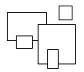

Prev - #27 Rectangle Drawing | Table of Contents | Next - #29 Pyramid Drawing
drawBorder(16, 4) → +--------------+
| |
| |
+--------------+

Similar to the solid, filled-in ASCII art rectangles our code
generated in Exercise #27, “Rectangle Drawing,” this exercise draws only the
border of a rectangle. The + plus character is used
for the corners, the - dash character for horizontal
lines, and the | pipe character for vertical lines.
(This is the similar style as the lines in Exercise #25’s multiplication table.
Exercise Description
Write a drawBorder() function with
parameters width and height.
The function draws the border of a rectangle with the given integer sizes. There
are no Python assert statements to check the
correctness of your program. Instead, you can visually inspect the output
yourself. For example, calling drawBorder(16, 4)
would output the following:
+--------------+
| |
| |
+--------------+
The interior of the rectangle requires printing spaces. The sizes
given include the space required for the corners. If the width
or height parameter is less than 2, the function should print nothing.
Try to write a solution based on the information in this description. If you still have trouble solving this exercise, read the Solution Design and Special Cases and Gotchas sections for additional hints.
Prerequisite concepts: Boolean operators, strings, string
concatenation, string replication, for loops, range()
Solution Design
There are three separate parts required for the drawBorder() function: drawing the top border line, drawing the middle, and drawing the bottom border line. The code for drawing the top and bottom border line will be identical. So really, there’s only two parts you need to code in this function.
Drawing the top horizontal line involves creating a string with a
+ plus character on the left, followed by a number
of - minus characters, and then another + plus character on the right. The number of - minus characters needed is width - 2,
because the two + plus characters for the corners
count as two units of width.
Similarly, drawing the middle rows requires a | pipe character,
followed by a number of space characters, and then another | pipe character.
The number of spaces is also width - 2. You’ll also
need to put this code in a for loop, and draw a
number of these rows equal to height - 2.
Finally, drawing the bottom horizontal line is identical to drawing the top. You can copy and paste the code.
String replication can easily create the -
minus and space character strings. In Python, you can use the * operator with a string and an integer to evaluate to a
longer string. For example, enter the following into the interactive shell:
>>> 'Hello' * 3
'HelloHelloHello'
>>> '-' * 16
'----------------'
>>> width = 10
>>> (width - 2) * '-'
'--------'
Special Cases and Gotchas
Note that the minimum width and height for a border is 2. Calling drawBorder(2, 2)
should print the following on the screen:
++
++
If either the width or height argument is less than 2,
the function prints nothing.
Now try to write a solution based on the information in the previous sections. If you still have trouble solving this exercise, read the Solution Template section for additional hints.
Solution Template
Try to first write a solution from scratch. But if you have difficulty, you can use the following partial program as a starting place. Copy the following code from https://invpy.com/borderdrawing-template.py and paste it into your code editor. Replace the underscores with code to make a working program:
def drawBorder(width, height):
# Special case: If the width or height is less than two, draw nothing:
if width < ____ or height < ____:
return
# Print the top row:
print('+' + ('-' * (width - ____)) + ____)
# Loop for each row (except the top and bottom):
for i in range(height - 2):
# Print the sides:
print(____ + (____ * (width - 2)) + ____)
# Print the bottom row:
print(___________________________________)
The complete solution for this exercise is given in Appendix A and https://invpy.com/borderdrawing.py. You can view each step of this program as it runs under a debugger at https://invpy.com/borderdrawing-debug/.
Prev - #27 Rectangle Drawing | Table of Contents | Next - #29 Pyramid Drawing